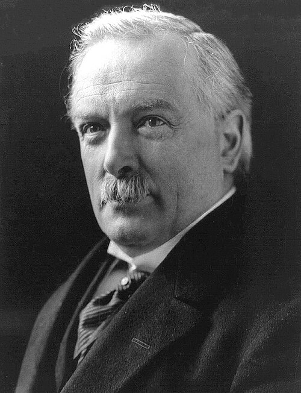
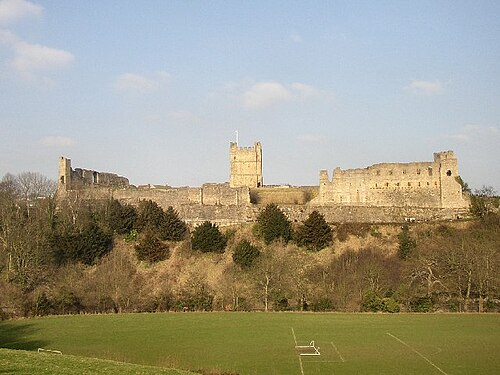
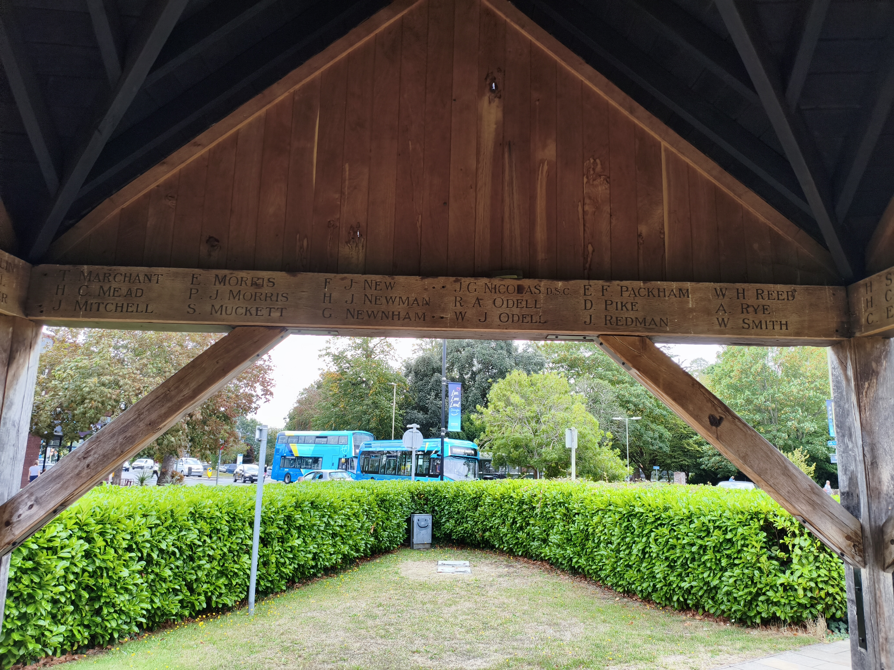
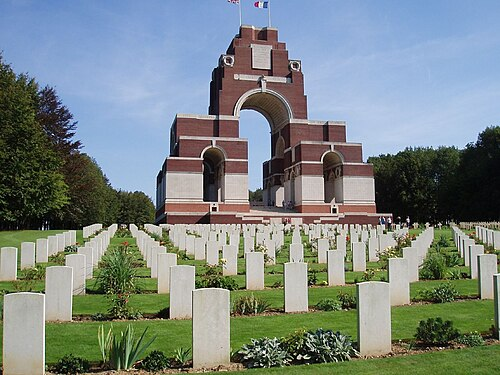

Year 9 The Great War Part 2 Pupil Workbook (Double-Page Spread)
KS3: The Great War (1914–1919)
Course Textbook
Enquiry: How did a single spark in Sarajevo ignite a global conflict that transformed the modern world?
Contents
|
Lesson 1: Why were young men so desperate to join the slaughter of 1914?
|
|
|
Lesson 2: Did British generals make the horror of trench warfare worse?
|
|
|
Lesson 3: How much of a 'World' War was it, and why were the Empire's troops forgotten?
|
|
|
Lesson 4: How did a war fought miles away completely control daily life in Britain?
|
|
|
Lesson 5: Did the Treaty of Versailles solve the problems of 1914, or create the nightmares of 1939?
|
|
|
Lesson 6: How did the "Lost Generation" impact the village of Stubbington?
|
|
|
Lesson 7: Assessment: The Great War (1914–1919)
|
|
L1: Why were young men so desperate to join the slaughter of 1914?[[SRC_MARKER:L0_Start]]
Learning Objectives
Explain how the BEF's small size compelled Britain to rely on voluntary recruitment and Lord Kitchener’s New Armies.
Analyze how the "Pals Battalions" mobilized local communities like the Pompey Pals, and evaluate their tragic vulnerability to industrial warfare.
Evaluate the historiographical debate between traditional "naive victim" interpretations and revisionist arguments on moral duty (Pennell) and economic pragmatism (Sheffield).
Source S1: "Women of Britain Say GO!" Propaganda Poster (Parliamentary Recruiting Committee, 1915)
Official British recruitment poster No. 75, designed by E.J. Kealey and published in 1915 by the Parliamentary Recruiting Committee. It depicts two women and a child gazing out of a domestic window as British soldiers march bravely into the distance.
Q1. Study Source A. How does this poster use emotional manipulation and gender expectations to pressure men into volunteering?
Vocabulary Check
The Odd One Out: Select THREE terms that share a close historical connection. Identify which ONE remaining term is the 'Odd One Out' in this lesson, and explain your historical reasoning:
British Expeditionary Force | Lord Kitchener | Pals Battalions | White Feather | Pragmatism | Jingoism
Teacher Model / Pupil Reasoning:
[[SRC_MARKER:L0_Source_0]]
Source S2: "Women of Britain Say GO!" Recruitment Poster (Parliamentary Recruiting Committee, 1915)

Official British recruitment poster No. 75, designed by E.J. Kealey. Two women and a child gaze from a domestic window as soldiers march bravely into the distance.
[[SRC_MARKER:L0_Source_1]]
Source S3: The Pompey Pals Enlistment Appeal (Portsmouth Evening News, September 1914)
“Come forward, Portsmouth men! Join the 14th and 15th Battalions of the Hampshire Regiment. Stand shoulder to shoulder with your mates from the dockyard, the football terraces, and the shops. Serve together, fight together, win together for King and Country!”
[[SRC_MARKER:L0_Source_2]]
Source S4: Jessie Pope, "Who’s for the Game?" (Daily Mail, 1915)
“Who’s for the game, the biggest that’s played, / The red crashing game of a fight? / Who’ll grip and tackle the job unafraid? / And who thinks he’d rather sit tight? / Come along, lads— / But you’ll come on all right— / For there’s only one course to pursue, / Your country is up to her neck in a fight, / And she’s looking and calling for you.”
[[SRC_MARKER:L0_Source_3]]
Source S5: The Order of the White Feather: Civilian Vigilantes in London (1914)
Civilian women patrolled public transport, music halls, and parks, pinning white feathers—the traditional badge of cowardice—onto the lapels of young men dressed in civilian suits.
[1.1] When Great Britain declared war on imperial Germany at 11:00 PM on 4 August 1914, the British military confronted an unprecedented strategic emergency. Unlike the great continental empires—Germany, France, and Russia—which maintained millions of conscripted reservists trained through compulsory military service, Britain had steadfastly preserved an anti-militarist tradition. The nation possessed only a tiny professional force of approximately 120,000 soldiers: the
British Expeditionary Force (BEF). Kaiser Wilhelm II famously disparaged this small force as a "contemptible little army". While British naval dominance commanded the oceans, the government possessed almost no army to deploy on the battlefields of Europe. As the German military swept through neutral Belgium under the Schlieffen Plan, Britain faced an existential dilemma: it had to build an army of millions entirely from voluntary recruits.
[1.2] Appointed Secretary of State for War on 5 August, Field Marshal
Lord Horatio Kitchener was the only military leader in London who saw through the popular illusion that the war would be "over by Christmas". Kitchener warned the Cabinet that the conflict would last at least three years, demand vast industrial mobilization, and require thirty new divisions of infantry. Bypassing traditional bureaucratic channels, Kitchener launched the most aggressive recruitment campaign in modern history. Alfred Leete’s iconic poster—featuring Kitchener’s stern features, piercing gaze, pointing finger, and the commanding slogan
"Your Country Needs You"—was plastered across railway stations, factory gates, post offices, and town halls. The public response was an unprecedented patriotic stampede: within eight weeks,
750,000 men enlisted; by late 1915, nearly 2.5 million British citizens had volunteered for "Kitchener’s New Armies".
[1.3] What propelled millions of young men to rush to the recruitment offices? While patriotic enthusiasm and imperial pride were widespread, modern historians emphasize that enlistment was also driven by hard economic realities. In 1914, Britain was enduring a period of industrial stagnation without a welfare state. For young men trapped in low-paid, repetitive jobs in cotton mills, damp coal mines, or impoverished rural fields, the army represented an enticing escape. The army promised steady employment, regular pay (
"the King’s Shilling"—1 shilling and 2 pence per day), three hot meals a day, sturdy leather boots, and warm clothing. Alongside this economic pragmatism was a powerful moral outrage: British newspapers were filled with sensationalized reports of the "Rape of Belgium", depicting German atrocities against innocent civilians. Hundreds of thousands of volunteers genuinely believed they were embarking on a righteous crusade to defend European democracy and international law against brutal militarism.
[[SRC_MARKER:L0_Task_0_0]]Q2. The Recruitment Domino: Trace how Britain’s lack of a conscript army transformed into the largest voluntary mobilization in British history. Complete Step 4.
[2.1] By late August 1914, the initial rush of volunteers began to strain traditional military structures. To sustain enlistment, General Sir Henry Rawlinson proposed a revolutionary psychological idea: allowing men to enlist and serve side-by-side with their friends, work colleagues, and neighbours in specially designated
"Pals Battalions". Rawlinson recognized that young men who were terrified of joining an impersonal army would eagerly enlist if they were guaranteed they would never be separated from their mates. Across the country, towns, industries, and social clubs mobilized en masse: railway workers, stockbrokers, cricket teams, and church choirs signed up together. In London, city clerks formed the "Public Schools Battalion"; in Yorkshire, miners formed the "Accrington Pals"; and in Hampshire, local pride coalesced around the famous
"Pompey Pals".
[2.2] For the men of Portsmouth, Fareham, and surrounding villages like Stubbington, the call was answered with fervent enthusiasm. In August 1914, the Portsmouth Citizens Patriotic Recruiting Committee formed the 14th and 15th (Service) Battalions of the Hampshire Regiment—the Pompey Pals. Dockyard shipwrights, clerks from Commercial Road, and farm labourers from the Meon Valley queued for hours outside the Portsmouth Town Hall. They were issued temporary blue uniforms, drilled on Southsea Common, and cheered by tens of thousands as they paraded through the streets before departing for training camps in the New Forest. The camaraderie was intoxicating: serving alongside childhood friends transformed military service from an individual ordeal into an exhilarating community crusade.
[2.3] However, the Pals Battalion concept contained a fatal, tragic flaw that military strategists completely failed to anticipate: by concentrating the young male population of specific streets, villages, and workplaces into single fighting units, the mechanized violence of modern industrial warfare could wipe out an entire community in an afternoon. On
3 September 1916, during the Battle of the Somme, the 1st Pompey Pals (14th Hampshires) were ordered to assault heavily fortified German trenches at Hamel near the River Ancre. Facing interlocking German machine-gun nests and devastating artillery barrages, 587 Pompey Pals advanced across No Man’s Land. Within hours,
457 men became casualties—killed, wounded, or missing. In a single day, Portsmouth and surrounding communities lost an entire generation of young men. When telegrams arrived, whole streets were plunged into mourning, shuttering shopfronts and shattering families forever.
[[SRC_MARKER:L0_Task_1_0]]Q3. Priority Diamond: Rank the four pivotal factors driving voluntary recruitment from most decisive (Top Driver #1) to least decisive (#4) for a working-class teenager in 1914.
[3.1] As the horrific casualty reports from the Western Front mounted throughout 1915, the initial euphoric rush of volunteers began to falter. In response, the British government and civil society turned to aggressive psychological manipulation to coerce remaining eligible men into uniform. In 1915, the Parliamentary Recruiting Committee published one of the most famous and manipulative propaganda posters of the war:
"Women of Britain Say GO!" (Source A). The poster depicted two fashionable women and a small child standing by a window, watching a column of soldiers marching off to the front. The visual design was a masterclass in domestic guilt: it weaponized traditional Victorian gender roles, implying that real women expected their husbands, sons, and brothers to fight, and that any man remaining at home was a selfish coward failing his duty as a masculine protector.
[3.2] Where official posters used subtle psychological guilt, civilian vigilante groups deployed ruthless public humiliation. In August 1914, retired Admiral Charles Fitzgerald founded the
Order of the White Feather in Folkestone (Source C). Fitzgerald organized groups of young women to patrol streets, promenades, restaurants, and omnibuses, handing out white feathers—the universal symbol of cowardice—to any man of military age not wearing uniform. The campaign inflicted devastating emotional trauma: young teenagers under eighteen, men with hidden physical disabilities, workers in reserved wartime industries (like dockyards and railways), and soldiers home on convalescent leave after being wounded were publicly taunted and humiliated. Desperate to escape this unbearable social stigma, thousands of boys as young as fifteen lied about their age to enlist.
[3.3] This social hysteria was reinforced by popular culture, particularly jingoistic poetry published in national newspapers. Writers like
Jessie Pope produced cheerful, rhyming verses that trivialized the horrors of industrialized combat into a schoolyard rugby match (Source B). In poems like
"Who’s for the Game?" (1915), Pope compared trench slaughter to athletic sport:
"Who’ll grip and tackle the job unafraid? / And who thinks he’d rather sit tight?" Pope’s shallow rhetoric deliberately concealed the horrific reality of gangrene, poison gas, machine guns, and artillery shrapnel. To soldiers enduring the filthy, shell-blasted trenches of France, civilian poetry like Pope’s was an insulting, murderous lie. Trench poet
Wilfred Owen was so enraged by Pope’s verses that he originally dedicated his masterpiece
Dulce et Decorum Est directly to her, branding her simplistic slogan—"It is sweet and fitting to die for one’s country"—as "the old Lie".
[[SRC_MARKER:L0_Task_2_0]]Q4. Forensic Scalpel: Interrogate Source B (Jessie Pope’s Poem). Extract the exact phrase where Pope reduces industrial war into an athletic rugby match.
[4.1] For over a century, the popular perception of the 1914 volunteers has been defined by the tragic myth of the "naive victim". Popularized in 1960s plays like
Oh! What a Lovely War and television comedies like
Blackadder Goes Forth, this traditional interpretation contends that an entire generation of innocent, impressionable young men was brainwashed by jingoistic propaganda, duped by war poets like Jessie Pope, or bullied by white feathers into marching to their deaths. According to this view, the volunteers were naive schoolboys who treated war as a summer picnic that would be "over by Christmas", completely blind to the industrialized butcher’s shop that awaited them in France.
[4.2] In recent decades, however, modern revisionist historians have fundamentally challenged this simplistic caricature. In
A Kingdom United (2012), historian
Catriona Pennell examined thousands of personal diaries, regional letters, and provincial newspapers from 1914. Pennell proves that British citizens were neither wildly enthusiastic nor blindly foolish. Volunteers were fully aware that war was dangerous and destructive; they enlisted because of a profound, rational moral conviction. The British public felt genuine outrage over Germany’s violation of Belgian neutrality and the documented atrocities committed against Belgian civilians. Men joined not out of bloodlust, but out of a sober sense of duty to defend international law, uphold British honour, and protect small European democracies from Prussian autocracy.
[4.3] Furthermore, military historian
Gary Sheffield demonstrates that enlistment was underpinned by
economic pragmatism. In the hardscrabble working-class districts of northern England and Hampshire, joining the army was a practical financial decision. The army offered guaranteed wages, hot food, and family separation allowances that provided greater economic security than casual labour in depression-hit civilian industries. Ultimately, the volunteers of 1914 were neither brainwashed dupes nor heroic cartoon cutouts: they were complex, rational human beings responding to an extraordinary convergence of moral principle, communal solidarity, economic necessity, and societal pressure.
[[SRC_MARKER:L0_Task_3_0]]Q5. Explain why so many young British men volunteered to join the armed forces in 1914. (12 marks)
Pair & Share Activity
Q6. Look at the three main reasons young men enlisted in 1914: patriotic adventure, peer pressure/guilt, and economic survival. Which factor do you think was the most influential for an ordinary working-class teenager?
Historian's Corner: The Myth of the Gullible Volunteer: Pennell vs The Traditional View
For decades, popular history portrayed the volunteers of 1914 as naive simpletons who were tricked by lying propaganda posters and jingoistic poetry into throwing their lives away. However, modern revisionist historian Catriona Pennell (A Kingdom United, 2012) argues that British volunteers were rational actors who made sober decisions based on genuine moral outrage over Germany’s invasion of Belgium. Alongside this, military historian Gary Sheffield demonstrates that millions enlisted out of economic pragmatism, seeking stable wages, clothing, and food during a time of widespread poverty.
Q7. Does the evidence of the "Pals Battalions" support the traditional view of naive volunteers, or the revisionist view of rational community solidarity?
Q8. Explain why so many young British men volunteered to join the armed forces in 1914. (12 marks)
L2: Did British generals make the horror of trench warfare worse?[[SRC_MARKER:L1_Start]]
Learning Objectives
Explain how the Race to the Sea and defensive technologies established stalemate across the Western Front.
Analyze the physical and psychological horrors of trench life and industrial weaponry.
Evaluate the historiographical debate surrounding General Haig and the Battle of the Somme.
Source S1: Aerial Reconnaissance of German & British Trench Systems on the Western Front (1916)
Royal Flying Corps aerial reconnaissance photograph taken over the Western Front in 1916, showing the intricate, zig-zag defensive networks, communication trenches, and pulverized shell craters of No Man’s Land.
Q1. Study Source A. How does this aerial photograph reveal the defensive strength and complex design of Western Front trench systems?
Vocabulary Check
The Golden Sentence: Choose TWO terms from the word bank. Write ONE grammatically sophisticated, historically accurate sentence connecting them using a causal conjunction (because, although, or consequently):
Stalemate | No Man's Land | Artillery | Attrition | Trench Foot | Shell Shock | Field Marshal Douglas Haig | Creeping Barrage
Teacher Model / Pupil Sentence:
[[SRC_MARKER:L1_Source_0]]
Source S2: Aerial Reconnaissance of German & British Trench Systems on the Western Front (1916)

Aerial photograph showing the zigzagging front lines, communication trenches, and the shell-pocked wasteland of No Man’s Land.
[[SRC_MARKER:L1_Source_1]]
Source S3: Eyewitness Account: Private Arthur Savage on Trench Rats and Shelling (1915)
“Trench rats were as big as cats. They were bold, vicious brutes that ate the dead and ran across your face while you tried to sleep. But the bombardment was the true terror: days on end of deafening concussions that drove men out of their minds until they clawed at the mud screaming like infants.”
[[SRC_MARKER:L1_Source_2]]
Source S4: Field Marshal Sir Douglas Haig’s Official Despatch on the Somme (December 1916)
“The objective of the 1916 campaign was to relieve pressure upon the French at Verdun, to prevent the transfer of further German forces, and to wear down the strength of the enemy. These three objectives have been completely accomplished. The enemy has been heavily punished.”
[[SRC_MARKER:L1_Source_3]]
Source S5: Lieutenant Wilfred Owen, "Dulce et Decorum Est" (1917)
“If in some smothering dreams, you too could pace / Behind the wagon that we flung him in, / And watch the white eyes writhing in his face, / His hanging face, like a devil’s sick of sin; / If you could hear, at every jolt, the blood / Come gargling from the froth-corrupted lungs... / My friend, you would not tell with such high zest / To children ardent for some desperate glory, / The old Lie: Dulce et decorum est / Pro patria mori.”
[1.1] By late September 1914, the initial mobile warfare of the First World War ground to an abrupt, bloody halt. Following the German defeat at the
Battle of the Marne, General Helmuth von Moltke’s grand gamble to knock France out of the conflict in six weeks collapsed. In response, both the Allied and German commands attempted a rapid series of flanking maneuvers heading north toward Flanders, desperately searching for an open flank to roll up the enemy’s lines. This sequence of frantic engagements—popularly known as the
"Race to the Sea"—culminated at the First Battle of Ypres in November 1914. When the opposing armies finally collided with the impassable barrier of the North Sea coastline, all room for strategic maneuver vanished. Facing deadly industrial firepower, soldiers on both sides scraped shallow rifle pits into the chalk and clay, which rapidly evolved into a continuous, unbroken network of deep defensive trenches stretching 400 miles from the Belgian coast to the Swiss border.
[1.2] The rapid emergence of trench systems was not a strategic choice, but an inescapable tactical necessity dictated by revolutionary defensive weapons. In open terrain, infantry charges were instantly obliterated by the devastating synergy of rapid-firing machine guns (such as the British Vickers and German Maxim) and quick-firing heavy artillery firing explosive shrapnel shells. A single machine gun crew could fire 500 rounds per minute, sweeping a field with the firepower of an entire infantry company. In the open, human flesh had no chance against industrial steel; digging subterranean channels into the earth was the only way a soldier could survive on a modern battlefield.
[1.3] These trench networks rapidly developed into sophisticated engineering marvels (Source A). Frontline trenches were never dug in straight lines: they were constructed in an intricate
zig-zag or traverse pattern. This geometric layout served two vital defensive purposes: first, if an enemy raiding party penetrated the trench, they could not fire straight down the corridor (enfilading fire); second, if an explosive artillery shell detonated inside a trench bay, the blast shockwave and flying shrapnel were confined to that single compartment, protecting the men around the corner. Behind the frontline trenches lay support trenches, reserve trenches, and communication trenches running backward to supply depots and medical dressing stations, creating an impenetrable defensive labyrinth.
[[SRC_MARKER:L1_Task_0_0]]Q2. The Deadlock Domino: Trace how the collapse of the Schlieffen Plan transformed open mobile warfare into a 400-mile static trench stalemate. Complete Step 4.
[2.1] Life inside the trenches was defined by unrelenting physical degradation, extreme sensory torment, and pervasive filth. Because the water table in Flanders and northern France was mere feet below the surface, trenches frequently flooded with freezing, foul-smelling water and thick, viscous mud (Source C). Soldiers stood for weeks in waterlogged boots, resulting in
"Trench Foot"—a debilitating fungal and circulatory infection where feet swelled to twice their normal size, turned numb and gangrenous, and frequently required surgical amputation. Millions of aggressive, corpulent black rats—fattened on decaying corpses abandoned in No Man’s Land—swarmed the dugouts and scampered across soldiers’ sleeping bodies. Lice infested every fold of clothing, causing constant scratching and transmitting "Trench Fever", which induced blinding headaches and severe joint pain.
[2.2] Beyond the rampant squalor and disease lay the ever-present terror of mechanized slaughter. Heavy artillery was the undisputed killer of the Western Front, responsible for nearly 60% of all combat casualties. Millions of high-explosive and shrapnel shells rained down day and night, obliterating trenches, dismembering human bodies, and burying men alive under tons of earth. The relentless concussive shockwaves and deafening roar shattered soldiers' nervous systems, producing thousands of psychiatric casualties suffering from
"Shell Shock" (now recognized as post-traumatic stress disorder). Men shook uncontrollably, lost the ability to speak, or suffered severe catatonic paralysis.
[2.3] The industrial nightmare escalated further in April 1915 at the Second Battle of Ypres, when the German Army unleashed
chemical warfare by releasing 168 tons of chlorine gas across Allied lines. Chlorine destroyed the respiratory tract, causing soldiers to suffocate as their lungs filled with fluid. Subsequent developments introduced phosgene (an invisible, delayed-action toxin) and mustard gas (1917). Mustard gas was particularly insidious: heavier than air, it settled into the bottom of trenches and shell holes, burning through woollen uniforms, blistering flesh, blinding soldiers, and causing excruciating internal burns that took weeks to kill. War poet
Wilfred Owen immortalized this horrifying agony in his masterpiece
"Dulce et Decorum Est", describing a soldier caught without his mask "flound’ring like a man in fire or lime" and drowning under a green sea of poison gas (Source E).
[[SRC_MARKER:L1_Task_1_0]]Q3. Priority Diamond: Rank the four pivotal hazards of trench warfare from most lethal/destructive (Top Peril #1) to least destructive (#4) for an infantry soldier on the front line.
[3.1] By the summer of 1916, Allied high command confronted a grave strategic crisis: the French army was being systematically "bled white" by the German offensive at Verdun. To relieve pressure on France, British Commander-in-Chief
Field Marshal Sir Douglas Haig launched a massive joint offensive along the River Somme on
1 July 1916. Haig’s tactical plan rested entirely on a colossal preliminary artillery bombardment: for seven days and nights, 1,537 British guns fired over 1.5 million shells at the German positions. Haig firmly believed the bombardment would pulverize German barbed wire, smash concrete bunkers, and kill all defenders. Consequently, British infantry were ordered to advance across No Man’s Land in broad daylight, walking slowly in neat, shoulder-to-shoulder lines while heavily burdened with 30-kilogram backpacks.
[3.2] The result was the most catastrophic military disaster in British history. Haig’s assumptions proved fatally flawed: approximately one-third of the British shells were duds that failed to explode, and shrapnel shells merely tangled the thick German barbed wire rather than cutting it. Crucially, the German defenders had excavated deep, concrete-reinforced underground dugouts thirty to forty feet below ground. Unharmed by the bombardment, the Germans rushed to the surface with Maxim machine guns the moment the shelling stopped. Moving slowly through the wire, British soldiers were mown down in swathes. On the first day alone, the British Army suffered
57,470 casualties, including 19,240 dead. Despite this slaughter, Haig persisted with the offensive for five grueling months until November 1916, resulting in over 420,000 British casualties for an advance of merely six miles.
[3.3] In his official dispatches to the War Office (Source B), Haig justified the horrific casualty figures as a necessary and successful operation of
attrition. Haig argued that the Somme had successfully relieved Verdun, pinned German forces to the Western Front, and inflicted irreplaceable casualties on the German reserve army. However, frontline survivors and contemporary critics were appalled by what they viewed as criminal indifference. The stark contrast between Haig’s tidy administrative reports and the pulverized corpses lying rotting in the mud fueled the enduring perception that the British Army was an army of brave "lions" led to their slaughter by aristocratic, unfeeling "donkeys".
[[SRC_MARKER:L1_Task_2_0]]Q4. Forensic Scalpel: Interrogate Source B (Haig’s Official Dispatch). Extract the exact phrase where Haig justifies the catastrophic casualties as a necessary process of exhausting the German military.
[4.1] For over five decades after the First World War, British public perception was dominated by the popular condemnation of its generals. The phrase
"Lions led by Donkeys"—popularized in Alan Clark’s influential 1961 book
The Donkeys, Joan Littlewood’s musical
Oh! What a Lovely War, and the satirical sitcom
Blackadder Goes Forth—became national gospel. According to this traditional view, the ordinary British Tommy was a heroic, long-suffering "lion", while generals like Haig were foolish, aristocratic "donkeys" who sat in luxurious French châteaux miles behind the lines, completely oblivious to the horrific conditions of mud and machine guns, repeating discredited frontal assaults with callous indifference.
[4.2] In recent decades, however, rigorous academic history has thoroughly dismantled this simplistic caricature. Military historians like
John Terraine and Professor
Gary Sheffield (
The Chief, 2011) demonstrate that Haig faced an unprecedented tactical challenge that no military commander in history had ever solved. The Western Front was the first industrial war: defensive weaponry (machine guns, heavy artillery, concrete bunkers, barbed wire) had outpaced offensive capabilities by decades. Crucially, battlefield communications had broken down: commanders had no portable two-way radios and were forced to rely on telephone cables that were instantly severed by artillery, meaning generals could only communicate via runners and carrier pigeons. Blaming Haig for failing to achieve rapid breakthrough ignores the reality that no commander on either side—German, French, or British—was able to break the trench deadlock until 1918.
[4.3] Far from being inflexible fools, Haig and the British Army climbed a steep, revolutionary
"learning curve". In September 1916 at Flers-Courcelette on the Somme, Haig authorized the world’s first deployment of tanks, actively embracing technological innovation. Over the next two years, the British military perfected the
creeping barrage, developed flash-spotting and sound-ranging to silence enemy artillery, pioneered aerial photo reconnaissance, and trained infantry in decentralized platoon tactics. The culmination of this transformation occurred between August and November 1918 during the
"Hundred Days Offensive". Operating under Haig’s overall command, the British Army smashed the impenetrable Hindenburg Line, advanced 60 miles, captured 188,000 prisoners and 2,840 guns, and decisively defeated the German Army in the field, forcing Germany to sign the Armistice of 11 November 1918.
[[SRC_MARKER:L1_Task_3_0]]Q5. "British generals made the horror of trench warfare worse through outdated tactics and callous incompetence." How far do you agree with this view of General Douglas Haig and the Western Front? (16 marks)
Pair & Share Activity
Q6. Consider the traditional view ("Lions led by Donkeys") versus the modern revisionist view (Haig climbed a steep "learning curve"). Do you believe British generals deserve primary blame for the slaughter of the Western Front, or were they victims of unprecedented industrial technology?
Historian's Corner: The Haig Debate: Alan Clark vs Gary Sheffield
In his 1961 book "The Donkeys", historian and politician Alan Clark popularized the argument that brave British troops were commanded by foolish, arrogant, and out-of-touch aristocrats who squandered an entire generation in senseless frontal assaults. However, modern revisionist historian Professor Gary Sheffield ("The Chief: Douglas Haig and the British Army", 2011) fundamentally challenges this caricature. Sheffield demonstrates that Haig confronted the world’s first industrial war with zero technological template. Instead of repeating failures, Haig mastered tanks, creeping barrages, aerial photography, and sound-ranging artillery, leading the British Army to smash the German military in the decisive Hundred Days Offensive of 1918.
Q7. Why did 1960s public culture embrace Alan Clark’s "Donkeys" thesis so eagerly, and why have academic historians largely rejected it?
Q8. "British generals made the horror of trench warfare worse through outdated tactics and callous incompetence." How far do you agree with this view of General Douglas Haig and the Western Front? (16 marks)
L3: How much of a 'World' War was it, and why were the Empire's troops forgotten?[[SRC_MARKER:L2_Start]]
Learning Objectives
Analyze the vital military intervention of the Indian Army in autumn 1914 and evaluate the significance of Sepoy Khudadad Khan VC.
Examine the logistical labor and racial discrimination experienced by the BWIR and Chinese Labour Corps.
Evaluate the historical debate surrounding imperial memory (Olusoga and Das) and analyze why colonial troops were marginalized.
Source S1: Sepoy Khudadad Khan VC, 129th Duke of Connaught’s Own Baluchis (1914)
Official military portrait of Sepoy Khudadad Khan VC (1888–1971), from Chakwal in modern-day Pakistan, wearing his Victoria Cross medal.
Q1. Study Source A. How does the heroism of Sepoy Khudadad Khan demonstrate the vital military role of the Indian Army in saving the British line in 1914?
Vocabulary Check
Conceptual Classification: Categorise the terms from the word bank into the two historical boxes below:
British Empire | Sepoy | Victoria Cross | Chinese Labour Corps | British West Indies Regiment | Royal Pavilion, Brighton | Imperial Censorship | Self-Determination
Power, Governance & Warfare
Economy, Trade & Society
[[SRC_MARKER:L2_Source_0]]
Source S2: Sepoy Khudadad Khan VC, 129th Duke of Connaught’s Own Baluchis (Hollebeke, October 1914)
Sepoy Khudadad Khan (1888–1971), the first South Asian soldier to be awarded the Victoria Cross for gallantry during the First Battle of Ypres.
[[SRC_MARKER:L2_Source_1]]
Source S3: Troops of the British West Indies Regiment (BWIR) on the Western Front (1916)

Volunteers from the Caribbean serving in the BWIR handling heavy artillery ammunition and supply trains behind the front line.
[[SRC_MARKER:L2_Source_2]]
Source S4: Men of the Chinese Labour Corps (CLC) Handling Artillery Ammunition (1917)

Chinese Labour Corps workers moving heavy howitzer shells at a railhead supply depot in northern France.
[[SRC_MARKER:L2_Source_3]]
Source S5: Censored Letter from a Wounded Indian Soldier at Brighton Pavilion Hospital (1915)
“Do not think that this is a war. This is not war, it is the ending of the world. Cannonballs rain like hail, and men are swallowed into the earth. The English take good care of our bodies in this grand palace, but we are prisoners here behind iron gates. Tell our brothers in the Punjab: do not come.”
[1.1] When the British government declared war on Imperial Germany on 4 August 1914, it did not act merely as an isolated island nation: it committed the colossal human, industrial, and financial resources of the
British Empire (Reference Map). Covering one-quarter of the earth’s landmass and encompassing over 400 million subjects across Africa, Asia, the Caribbean, and Australasia, the empire formed the largest imperial coalition in human history. Crucially, none of the subject peoples living in the colonies—from cotton farmers in the Punjab to dockworkers in Jamaica—were consulted before being dragged into the conflict. By constitutional decree from London, King George V’s declaration automatically committed every man, woman, and child across five continents to war.
[1.2] In the desperate opening months of 1914, Britain’s global empire provided an existential military lifeline. By October 1914, the small British Expeditionary Force (BEF) of 120,000 professional soldiers had been shattered: decimated at Mons, the Marne, and the Aisne, British battalions were hanging on by a thread in the muddy ruins of Flanders. With Kitchener’s New Armies of volunteers still untrained and unarmed in Britain, high command possessed only one trained, battle-ready reserve army: the
British Indian Army. Composed entirely of volunteer professional soldiers, two full divisions—the Lahore and Meerut Divisions, comprising 28,500 troops—were mobilized from Karachi and Bombay, sailed through the Suez Canal, and landed at Marseilles in late September 1914.
[1.3] Rushed directly to the frontline trenches at the First Battle of Ypres, Indian soldiers stepped into a freezing, waterlogged hell wearing lightweight cotton khaki summer drill uniforms. Despite having never experienced European winter conditions, frostbite, or modern industrialized artillery bombardments, the Indian Corps held one-third of the British frontline, preventing a catastrophic German breakthrough to the vital Channel ports. It was during this desperate defense at Hollebeke on 31 October 1914 that
Sepoy Khudadad Khan of the 129th Baluchis (Source A) performed his legendary act of gallantry: when his entire machine-gun crew was killed by heavy artillery, Khan stayed at his post, firing his Maxim gun alone despite being wounded, holding off German infantry until his ammunition was exhausted. Khan became the first South Asian soldier in history to be awarded the
Victoria Cross, shattering the racial barrier that had barred non-white imperial subjects from Britain’s supreme military honor.
[[SRC_MARKER:L2_Task_0_0]]Q2. The Imperial Lifeline: Trace how the near-destruction of Britain’s professional army compelled the deployment of over 1.3 million Indian troops to the Western Front. Complete Step 4.
[2.1] As the conflict transformed into a prolonged war of attrition, military success depended entirely on colossal industrial logistics. An army on the Western Front consumed millions of explosive artillery shells, millions of tons of barbed wire, and countless miles of railway tracks every month. To sustain this logistical furnace, the British military turned to colonial manpower from around the globe. In 1915, following intense lobbying from Caribbean leaders who wished to prove their loyalty to the King-Emperor, the War Office authorized the formation of the
British West Indies Regiment (BWIR) (Source C). Over 16,000 volunteers from Jamaica, Trinidad, Barbados, and British Guiana traveled across the Atlantic to serve King and Country.
[2.2] However, once in Europe, Black volunteers encountered deep institutional racism. British military commanders subscribed to pseudo-scientific Victorian racial hierarchies, fearing that allowing Black men to shoot white European soldiers would destroy the authority of white colonial rule after the war. Consequently, the War Office barred the BWIR from combat infantry roles on the Western Front, forcing them into brutal, hazardous manual labour battalions. BWIR soldiers worked in freezing temperatures unloading ammunition ships, building roads, and manually carrying heavy 100-pound artillery shells directly into forward gun batteries under devastating German artillery barrages. They suffered severe casualties, frostbite, and pneumonia, yet were paid significantly less than white British privates and were strictly denied promotion above the rank of sergeant.
[2.3] An even larger force of logistical labour was recruited from neutral China. Beginning in 1916, the British government secretly recruited approximately 140,000 Chinese men to form the
Chinese Labour Corps (CLC) (Source D). Bound by three-year contracts, these men performed the most dangerous, back-breaking work on the Western Front: unloading supply ships at French ports, digging trenches, maintaining railway networks, assembling tanks, and—most dangerously—clearing live unexploded ordnance and burying decaying corpses in No Man's Land. The Chinese labourers lived in strictly segregated, guarded camps, were subjected to harsh military discipline, and suffered over 20,000 deaths from shellfire, landmines, and the catastrophic 1918 Spanish Flu pandemic. Despite their vital contribution to Allied victory, they were completely excluded from the 1919 London Victory Parade.
[[SRC_MARKER:L2_Task_1_0]]Q3. Priority Diamond: Rank the four pivotal contributions of imperial and colonial personnel from most decisive (#1) to least decisive (#4) in sustaining the British war effort.
[3.1] Between 1914 and 1916, approximately 12,000 wounded Indian soldiers were transported across the English Channel to receive specialized medical treatment in England. The British government converted the flamboyant, Mughal-inspired
Royal Pavilion in Brighton into a showcase military hospital. Wounded sepoys were provided with separate kitchens for Hindu, Muslim, and Sikh dietary requirements, and high-caste Indian cooks were hired to prepare authentic meals. The British government heavily publicized this luxurious medical care in international newspapers and propaganda postcards to project a benevolent image of the King-Emperor caring for his loyal, grateful imperial subjects.
[3.2] However, behind this gleaming propaganda facade lay a ruthless system of surveillance and racial control. British authorities strictly confined convalescent Indian soldiers to the Pavilion grounds, surrounding the palace with barbed wire and armed guards to prevent them from mingling with white British civilians—particularly white working-class women. Furthermore, the War Office established the Office of the Chief Censor of Indian Mails, which systematically intercepted, translated, and censored every private letter written by Indian soldiers to their families in the Punjab (Source B). Any soldier who described the horrific reality of industrialized slaughter, criticized military leadership, or advised relatives not to enlist had their letters blacked out or confiscated.
[3.3] The intercepted letters preserved in the British Library reveal the profound emotional agony and cultural dislocation of colonial soldiers. In a poignant letter sent from Brighton Pavilion in January 1915 (Source B), an Indian sepoy wrote:
"This is not a war, it is the ending of the world... cannonballs fall like rain... like sheep in a pen, so we are kept." To soldiers accustomed to traditional colonial warfare, the mechanized slaughter of European high explosives and poison gas was an apocalyptic horror. The letters reveal that Indian soldiers fought not out of blind imperial loyalty, but out of personal honor (
izzat), loyalty to their comrades, and the desperate hope that their sacrifice would earn political freedom for India.
[[SRC_MARKER:L2_Task_2_0]]Q4. Forensic Scalpel: Interrogate Source B (The Intercepted Sepoy Letter). Extract the exact phrase where the soldier defines the conflict not as an ordinary war, but as cosmic destruction.
[4.1] In the decades following the 1918 Armistice, the four million non-white participants of the First World War were systematically written out of British historical memory. The national commemoration of the war—enshrined in Edwin Lutyens’ Cenotaph in Whitehall, the red poppy appeal, and iconic school literature like Wilfred Owen and Siegfried Sassoon—cast the Great War as an exclusively European, white British tragedy. Colonial soldiers who died on the Western Front, in Gallipoli, or in the East African campaign were rarely mentioned in British school textbooks, and their graves were frequently left unmarked or segregated in imperial cemeteries.
[4.2] In recent years, pioneering historians like Professor
David Olusoga (
The World’s War, 2014) and Professor
Santanu Das have dismantled this "white man’s war" myth. Olusoga demonstrates that the First World War was won because Britain operated as a global empire, leveraging the manpower, food, and industrial muscle of 400 million colonial subjects to outlast Germany. Erasing this reality was a deliberate ideological choice: admitting that European civilization had descended into industrial barbarism, and that Britain had been saved by soldiers from India, Africa, and the Caribbean, threatened the fundamental premise of the British Empire—namely, the myth of white racial superiority.
[4.3] Ultimately, the experience of the First World War served as the great accelerator of
anti-colonial independence movements. Having fought and died to defend European democracy and freedom against German autocracy, colonial veterans returned home with a transformed consciousness. They refused to accept second-class citizenship under British colonial rule. When the British government reneged on promises of self-government for India, widespread protests erupted, culminating in the horrific
Jallianwala Bagh (Amritsar) massacre of April 1919, where British troops gunned down hundreds of unarmed Indian civilians. Similar unrest erupted across Jamaica and Trinidad led by disaffected BWIR veterans. Rather than preserving the British Empire, the mobilization of colonial troops in 1914 unleashed the unstoppable forces of national self-determination that dismantled it.
[[SRC_MARKER:L2_Task_3_0]]Q5. Explain why the contributions of imperial and colonial personnel were marginalized in British memory of the First World War. (12 marks)
Pair & Share Activity
Q6. Consider why the British government heavily publicized the luxurious treatment of wounded Indian soldiers at Brighton Pavilion, yet ruthlessly censored their letters home and excluded Black troops from the 1919 Victory Parade. Was British imperial policy driven primarily by military gratitude or political fear?
Historian's Corner: Imperial Amnesia: David Olusoga vs Santanu Das
In his landmark book and BBC documentary "The World's War" (2014), historian Professor David Olusoga argues that the First World War was not a European clash of nations, but a clash of multi-ethnic global empires that could not have been fought—let alone won—without four million non-white combatants and labourers. Alongside this, cultural historian Professor Santanu Das ("India, Empire, and First World War Culture", 2018) explores the deeply personal, sensory trauma preserved in the intercepted letters and folk songs of colonial troops, demonstrating that the psychological trauma of the trenches was shared across imperial lines, yet systematically erased from European memorialization.
Q7. Why was the concept of the First World War as a "White Man’s War" so vital to European colonial empires in 1919?
Q8. Explain why the contributions of imperial and colonial personnel were marginalized in British memory of the First World War. (12 marks)
L4: How did a war fought miles away completely control daily life in Britain?[[SRC_MARKER:L3_Start]]
Learning Objectives
Explain how DORA and the German submarine blockade expanded the power of the state over civilian habits and food supplies.
Analyze the conscription crisis of 1916 and the treatment of Conscientious Objectors.
Evaluate the historiographical debate on whether the war liberated British women or exploited them.
Source S1: Women Workers in a British Munitions Factory ("Munitionettes") (1917)
Female workers operating heavy industrial lathes and filling high-explosive artillery shells in a government munitions factory in northern England, 1917.
Q1. Study Source A. How does this photograph demonstrate the radical transformation of women’s roles in British society during the First World War?
Vocabulary Check
Spot the Deliberate Error: Read the statement below. One historical fact or vocabulary concept has been deliberately falsified. Underline the error and explain the accurate historical reality below:
Home Front | DORA | Conscription | Conscientious Objector | Munitionettes | Canary Girls | Compulsory Rationing | Representation of the People Act
Challenge: Write ONE statement containing a deliberate historical misconception using Home Front or DORA. Identify and correct the error:
Teacher Model / Historical Correction:
[[SRC_MARKER:L3_Source_0]]
Source S2: The Defence of the Realm Act (DORA): Emergency Regulations (August 1914)
“His Majesty in Council has the power during the continuance of the present war to issue regulations for securing the public safety and defense of the realm: to take possession of any land or buildings; to prohibit the whistling for cabs at night; to censor all press publications; to dilute alcoholic beer; and to arrest any person suspected of communicating with the enemy without a warrant.”
[[SRC_MARKER:L3_Source_1]]
Source S3: David Lloyd George on the Munitions Crisis and Women’s Labour (June 1915)

David Lloyd George, appointed Minister of Munitions in 1915, who declared that without women’s factory work, the British army would face total defeat.
[[SRC_MARKER:L3_Source_2]]
Source S4: The Richmond Sixteen: Conscientious Objectors at Richmond Castle (May 1916)

Sixteen conscientious objectors imprisoned in the cell block of Richmond Castle, North Yorkshire, before being transported to France and sentenced to death for refusing military orders.
[[SRC_MARKER:L3_Source_3]]
Source S5: Memoir of a "Canary Girl" Working in Woolwich Arsenal (1917)
“Our skin turned as yellow as a canary from the TNT fumes, and our hair went ginger-red. We knew we were risking our lives: girls lost their hands in explosions, and the acid rotted your teeth. But we earned five pounds a week—more than our fathers ever made—and we were keeping our brothers alive in the trenches.”
[1.1] On 8 August 1914, just four days after Great Britain declared war on Germany, Parliament passed the
Defence of the Realm Act (DORA) without formal debate. In peacetime, Victorian and Edwardian Britain was defined by the principle of
laissez-faire—the deep-rooted philosophical belief that the government had no right to interfere in private property, personal habits, or the free-market economy. DORA obliterated this tradition overnight. Designed to guarantee national security during total industrial warfare, DORA granted the executive government near-autocratic powers to bypass Parliament, rule by decree, and commandeer private resources for the war effort.
[1.2] Under DORA’s sweeping regulations, the British state asserted direct control over key national industries. The government requisitioned coal mines, seized control of the railway network, took over private shipping, and assumed legal ownership of over 20,000 factories. The state also intervened directly in the daily personal habits of ordinary civilians to maximize industrial productivity. To reduce absenteeism among factory workers, pub opening hours were drastically slashed (pubs could only open between 12:00–2:30 PM and 6:30–9:30 PM), landlords were legally forced to water down beer to reduce drunkenness, and "no-treating" regulations were enforced, making it a criminal offence to buy a round of drinks for friends. In May 1916, the government introduced
British Summer Time (BST), advancing national clocks by one hour to save coal and provide extra daylight for munitions production.
[1.3] Alongside economic control came the systematic suppression of civil liberties. DORA made it illegal to discuss military matters in public, buy binoculars without a police permit, melt down gold coins, fly a kite, light bonfires, or feed bread to wild birds. Strict blackouts were enforced in coastal towns to blind German zeppelin airships. Crucially, the government established a sprawling apparatus of
press censorship: newspaper editors were barred from reporting military failures or industrial strikes, and postal censors opened and read millions of private letters sent between Britain and the front lines. Any civilian caught spreading rumors "likely to cause disaffection or alarm" was arrested, tried in military courts without a jury, and sentenced to prison.
[[SRC_MARKER:L3_Task_0_0]]Q2. The Total War Domino: Trace how the outbreak of industrial warfare forced the British government to abandon Victorian freedom and establish total control over civilian daily life. Complete Step 4.
[2.1] By late 1915, the voluntary recruitment system that had mobilized millions in 1914 had completely collapsed. The horrific slaughter of the Western Front—where thousands of men were killed each week in static trench warfare—consumed manpower faster than recruitment offices could supply it. Convinced that Britain could not sustain the war without forced mobilization, Prime Minister H.H. Asquith introduced the
Military Service Act in January 1916. The act imposed compulsory military
conscription on all unmarried men aged 18 to 41. In May 1916, conscription was extended to married men, and by 1918 the age limit was raised to 51. For the first time in modern British history, the state claimed legal ownership over the physical bodies of its male citizens, compelling them under penalty of imprisonment to kill and die for the nation.
[2.2] The introduction of conscription sparked profound moral, religious, and political resistance. To appease public concern, the government included a "conscience clause" allowing men to apply for exemption on grounds of genuine moral or religious conviction. Approximately 16,000 men registered as
Conscientious Objectors ("Conchies"). Applicants were forced to appear before local Military Service Tribunals—civic panels dominated by patriotic local businessmen, retired army officers, and magistrates who were openly hostile to objectors. Tribunals divided objectors into two categories: "Alternatists", who agreed to perform non-combatant civilian work (such as driving ambulances for the Friends’ Ambulance Unit or working on farms), and "Absolutists", who believed that any cooperation with the wartime state made them complicit in murder and refused to obey any military orders whatsoever.
[2.3] Absolutists were subjected to ruthless state persecution and societal vilification. Stripped of civilian rights, over 1,500 Absolutists were court-martialed, handed over to the military, and thrown into civil prisons like Wormwood Scrubs, Dartmoor, and the damp cell block of
Richmond Castle in North Yorkshire (Source D). In May 1916, sixteen objectors imprisoned at Richmond—the "Richmond Sixteen"—were secretly transported in chains to Boulogne, France. Paraded before thousands of troops, they were informed that because they were in a war zone, disobeying orders constituted mutiny in the face of the enemy. On 24 June 1916, all sixteen were formally sentenced to death by firing squad. Only desperate last-minute political intervention by MPs in London forced Prime Minister Asquith to commute their sentences to ten years of penal servitude. At home, conscientious objectors were treated as pariahs: stripped of their voting rights for five years after the war, attacked in newspapers as cowards, and denied employment.
[[SRC_MARKER:L3_Task_1_0]]Q3. Priority Diamond: Rank the four pivotal intrusions of the British state into civilian freedom from most severe/oppressive (#1) to least oppressive (#4).
[3.1] In May 1915, the British war effort was rocked by the catastrophic
"Shell Scandal". Frontline commanders revealed that British artillery was rationing ammunition to just four shells per gun per day, causing heavy casualties and halting military offensives. The resulting public fury brought down Prime Minister Asquith’s Liberal government, forcing the creation of a cross-party coalition and a new government department: the Ministry of Munitions, headed by the dynamic
David Lloyd George (Source C). Lloyd George recognized that with millions of men conscripted into the trenches, the arms factories would grind to a halt unless women were mobilized en masse to replace them. Over the next three years, over one million British women entered the workforce, taking over jobs in heavy engineering, transport, dockyards, and weapons factories that had previously been fiercely barred to female workers.
[3.2] The most celebrated female workers were the
"Munitionettes" (Source A), who worked in colossal state-run factories like Woolwich Arsenal in London and HM Factory Gretna in Scotland. These women worked grueling 12-hour shifts, seven days a week, operating heavy metal lathes and manually packing explosive gunpowder into artillery shells. The work was extraordinarily hazardous: workers handled toxic cordite and trinitrotoluene (TNT) without modern chemical masks or protective gloves. Prolonged contact with TNT powder absorbed through the skin caused severe chemical poisoning, destroying red blood cells and inducing toxic jaundice. The chemical turned the women’s skin, eyes, and hair a bright, fluorescent yellow, earning them the famous nickname
"Canary Girls". Beyond chronic liver poisoning, munitionettes lived in constant terror of explosive accidents. On 1 July 1918, a spark triggered a colossal explosion at the Chilwell shell-filling factory in Nottinghamshire, killing 137 workers and injuring 250 others—the worst single disaster in British industrial history.
[3.3] Despite these lethal conditions, munitions work provided working-class women with unprecedented economic and social independence. For the first time, young women earned substantial wages—often three times higher than pre-war domestic service or laundry work. They had independent spending money, bought fashionable clothes, attended cinemas, and went out in public without chaperones. Women also stepped into public transport, driving buses, conducting trams, delivering post, and working as firefighters and agricultural labourers in the Women’s Land Army. This visible transformation shattered the traditional Edwardian domestic myth that women were delicate, passive creatures incapable of physical or mechanical labour.
[[SRC_MARKER:L3_Task_2_0]]Q4. Forensic Scalpel: Interrogate Source B (The DORA Legislation). Extract the exact phrase where the government makes it a criminal offence to criticize the war or spread negative news.
[4.1] For decades after 1918, popular history textbooks promoted the romantic thesis that the First World War was the direct catalyst for the liberation of British women. According to this traditional view, the heroic patriotism of the Munitionettes and Land Army girls proved beyond all doubt that women were responsible citizens who deserved political equality. In response, a grateful male Parliament passed the landmark
Representation of the People Act in February 1918, enfranchising millions of British women. In this orthodox telling, total war accomplished in four years what fifty years of peaceful suffragist campaigning and militant suffragette direct action had failed to achieve.
[4.2] However, modern revisionist and feminist historians—notably Professor
Martin Pugh (
The March of the Women, 2000) and
Gail Braybon—have fundamentally dismantled this simplistic "reward" narrative. Pugh points out a glaring historical contradiction: the 1918 Act granted the vote only to women aged
30 and over who were householders or married to householders. The vast majority of female munitions workers—the young, unmarried working-class women in their teens and twenties who had risked their lives filling shells and turning yellow as Canary Girls—received absolutely zero voting rights in 1918. Parliament deliberately selected an older, married, and affluent demographic because conservative politicians feared that young, working-class female factory workers were politically radical and might vote for socialist parties.
[4.3] Furthermore, the end of the conflict in 1918 triggered an immediate backlash against female workers. Under the
Restoration of Pre-War Practices Act of 1919, the British government and trade unions legally forced women out of heavy industry, transport, and engineering, returning these well-paid jobs exclusively to demobilized male soldiers. Within a year of the Armistice, over 750,000 women were dismissed from their jobs and pressured to return to low-paid domestic service or unpaid housewives. True political equality was not achieved until the
Equal Franchise Act of 1928, which finally gave all women the vote at age 21 on the same terms as men. While the Great War permanently shattered social Victorian taboos surrounding female independence, the struggle for genuine gender equality was only just beginning.
[[SRC_MARKER:L3_Task_3_0]]Q5. Explain why the First World War had such a significant impact on British civilian life between 1914 and 1918. (12 marks)
Pair & Share Activity
Q6. Consider the impact of the First World War on British women. Did working in munitions factories genuinely "liberate" women, or were they merely exploited during an emergency and forced back into domestic subordination in 1919?
Historian's Corner: Did the War Liberate Women? Martin Pugh vs Gail Braybon
For decades, traditional history textbooks claimed that the First World War was the great liberator of British women, arguing that their heroic service as "Munitionettes" persuaded male politicians to grant them the vote in 1918. However, feminist historian Gail Braybon ("Women Workers in the First World War", 1981) and political historian Professor Martin Pugh ("The March of the Women", 2000) heavily challenge this orthodox narrative. Braybon proves that women endured brutal exploitation, toxic chemical poisoning, and unequal wages, only to be ruthlessly sacked and forced back into domestic servitude under the 1919 Restoration of Pre-War Practices Act. Furthermore, Pugh highlights that the 1918 Act enfranchised respectable, married women over 30—the exact demographic that did not work in munitions factories—while young working-class female workers remained entirely disenfranchised.
Q7. Why did the British Parliament grant the vote to women over 30 in 1918, while refusing to give the vote to the young women who actually worked in the munitions factories?
Q8. Explain why the First World War had such a significant impact on British civilian life between 1914 and 1918. (12 marks)
L5: Did the Treaty of Versailles solve the problems of 1914, or create the nightmares of 1939?[[SRC_MARKER:L4_Start]]
Learning Objectives
Contrast the conflicting diplomatic agendas of Clemenceau, Lloyd George, and Woodrow Wilson at Paris.
Analyze the punitive terms imposed on Germany (GARGLE) and the German reaction to the "Diktat".
Evaluate the historical interpretations of Keynes and MacMillan regarding whether Versailles caused World War II.
Source S1: "Peace and Future Cannon Fodder" by Will Dyson (Daily Herald, May 1919)
Editorial cartoon by Australian-British artist Will Dyson, published in the British Labour newspaper Daily Herald on 17 May 1919, commenting on the draft terms of the Treaty of Versailles.
Q1. Study Source A. How does Will Dyson use symbolism to predict that the Treaty of Versailles would cause a second world war?
Vocabulary Check
The Odd One Out: Select THREE terms that share a close historical connection. Identify which ONE remaining term is the 'Odd One Out' in this lesson, and explain your historical reasoning:
The Big Three | Georges Clemenceau | Woodrow Wilson | Diktat | Article 231 | Reparations | Demilitarized Zone | League of Nations
Teacher Model / Pupil Reasoning:
[[SRC_MARKER:L4_Source_0]]
Source S2: Georges Clemenceau’s Address to the Paris Peace Conference (January 1919)

Prime Minister Georges Clemenceau of France ("The Tiger"), who demanded maximum territorial security, reparations, and disarmament against Germany.
[[SRC_MARKER:L4_Source_1]]
Source S3: Article 231 of the Treaty of Versailles (The War Guilt Clause, 28 June 1919)
“The Allied and Associated Governments affirm and Germany accepts the responsibility of Germany and her allies for causing all the loss and damage to which the Allied and Associated Governments and their nationals have been subjected as a consequence of the war imposed upon them by the aggression of Germany and her allies.”
[[SRC_MARKER:L4_Source_2]]
Source S4: Will Dyson, "Peace and Future Cannon Fodder" (Daily Herald, 13 May 1919)

Famous political cartoon showing Clemenceau, Lloyd George, and Wilson leaving the treaty hall, while a weeping child labelled "1940 Class" stands in the corner.
[[SRC_MARKER:L4_Source_3]]
Source S5: John Maynard Keynes, The Economic Consequences of the Peace (December 1919)
“If we aim deliberately at the impoverishment of Central Europe, vengeance, I dare predict, will not limp. Nothing can delay for very long that final war between the forces of Reaction and the despairing convulsions of Revolution, before which the horrors of the late German war will fade into nothing.”
[1.1] In January 1919, delegates from thirty-two nations assembled at the lavish Palace of Versailles outside Paris to redraw the map of the world and construct a permanent peace. The symbolic location was chosen deliberately: it was in the glittering Hall of Mirrors at Versailles that the German Empire had been proclaimed in 1871 following France’s humiliating defeat in the Franco-Prussian War. Now, after four years of unprecedented industrialized slaughter that claimed twenty million lives, the victorious Allies gathered to settle the score. Crucially, the defeated Central Powers—Germany, Austria-Hungary, the Ottoman Empire, and Bulgaria—alongside revolutionary Soviet Russia were completely excluded from the negotiations. The conference was dominated by the leaders of the three most powerful victorious empires, known collectively as
"The Big Three" (Source C): French Prime Minister Georges Clemenceau, British Prime Minister David Lloyd George, and United States President Woodrow Wilson.
[1.2] From the outset, the Paris Peace Conference was paralyzed by fierce ideological clashes between the Big Three, each driven by contradictory national interests and trauma. French Prime Minister
Georges Clemenceau, nicknamed "The Tiger", represented a nation that had suffered 1.4 million military deaths and the total physical devastation of its northeastern industrial heartland. Clemenceau had witnessed German troops march on Paris twice in his lifetime (1870 and 1914). Driven by deep security paranoia and national vengeance, Clemenceau demanded that Germany be permanently crushed: stripped of all its military, crippled with astronomical financial reparations, dispossessed of its borders, and partitioned by creating an independent buffer state in the Rhineland. In Clemenceau’s famous words:
"America is far away, protected by the ocean. England is protected by her fleet. But France has no natural barrier between herself and Germany."[1.3] In sharp contrast stood US President
Woodrow Wilson, an idealistic former academic whose country had entered the war late in 1917 and suffered comparatively minor casualties (116,000 dead). Wilson believed that European imperialism, secret treaties, and militarism were the true causes of the war. He championed his famous
Fourteen Points, advocating national self-determination (allowing ethnic groups to govern themselves), global disarmament, free trade, and the creation of a
League of Nations to resolve international disputes through collective security rather than war. Caught uncomfortably between them was British Prime Minister
David Lloyd George. Having just won a landslide general election in December 1918 on populist anti-German slogans ("Hang the Kaiser" and "Squeeze the German lemon until the pips squeak"), Lloyd George had to satisfy a vengeful British public. Yet privately, Lloyd George was a pragmatist: he recognized that economically destroying Germany—Britain’s largest European trading partner before 1914—would devastate British exports and risk spreading Russian Bolshevism across Central Europe.
[[SRC_MARKER:L4_Task_0_0]]Q2. The Peace Domino: Trace how the competing motives of the victorious Allies resulted in the deeply flawed compromise of the Treaty of Versailles. Complete Step 4.
[2.1] On 28 June 1919—the fifth anniversary of the assassination of Archduke Franz Ferdinand in Sarajevo—the German delegation was ushered into the Hall of Mirrors at Versailles and forced to sign the finalized peace treaty (Source D). In Germany, the treaty was met with universal shock, fury, and despair, branded universally as a
"Diktat" (a dictated peace). The German public had believed that overthrowing Kaiser Wilhelm II in November 1918 and establishing a democratic republic would earn them a fair, honorable peace based on Wilson's Fourteen Points. Instead, German diplomats were treated as criminals: housed in a hotel surrounded by barbed wire, barred from speaking during negotiations, and presented with a rigid 440-article treaty alongside an Allied ultimatum: accept every condition within five days, or Allied armies would invade Germany and reimpose the lethal naval starvation blockade.
[2.2] The sweeping punitive terms of the Treaty of Versailles can be analyzed through the historical mnemonic
GARGLE:
•
Guilt: Under
Article 231 (the "War Guilt Clause"), Germany was forced to accept sole moral and legal responsibility for causing all loss and damage of the war.
•
Arms: The German military was dismantled to eliminate its offensive power. The army was capped at 100,000 volunteers (conscription was banned); the General Staff was abolished; all tanks, armored cars, heavy artillery, poison gas, and military aircraft were completely prohibited; the navy was restricted to six pre-dreadnought battleships and zero submarines; and the Rhineland was established as a permanent
demilitarized zone free of German soldiers.
•
Reparations: Because Germany accepted sole war guilt under Article 231, the Allies claimed the right to financial compensation. In 1921, the Allied Reparations Commission fixed the total bill at an astronomical
£6.6 billion ($33 billion), payable in gold, coal, and manufactured goods over several decades.
•
German Land: Germany was stripped of 13% of its European territory, 10% of its population, and 75% of its iron ore deposits. Alsace-Lorraine was returned to France; Eupen-Malmedy was ceded to Belgium; Northern Schleswig went to Denmark; the rich coal mines of the Saar were placed under League of Nations control for 15 years; the
Polish Corridor (West Prussia and Posen) was ceded to the new state of Poland to give it access to the sea, splitting East Prussia from mainland Germany; and political union with Austria (
Anschluss) was strictly forbidden (Reference Map).
•
League of Nations: Established to preserve peace, but Germany was banned from joining as an international pariah.
•
Empire: All German overseas colonies in Africa (Cameroon, Togo, German East Africa) and the Pacific were confiscated and transferred to Britain, France, and Japan as League of Nations "mandates".
[2.3] The signing of the treaty profoundly poisoned post-war German politics. Right-wing military leaders—notably Field Marshal Paul von Hindenburg and General Erich Ludendorff—spread the treacherous
"Dolchstoßlegende" (the "stab-in-the-back myth"). They falsely claimed that the German army had never been defeated on the battlefield, but had been "stabbed in the back" by treacherous socialist, democratic, and Jewish politicians at home who signed the 1918 Armistice and accepted Versailles. These democratic politicians were branded
"The November Criminals". By saddling the newborn Weimar Republic with the humiliation of Versailles and the crushing economic burden of reparations, the Allies inadvertently destroyed public faith in German democracy, creating fertile ground for extremist political violence and the rise of Adolf Hitler’s Nazi Party.
[[SRC_MARKER:L4_Task_1_0]]Q3. Priority Diamond: Rank the four pivotal clauses of the Treaty of Versailles from most politically/economically destabilizing (#1) to least destabilizing (#4) for post-war German democracy.
[3.1] At the heart of the Versailles settlement lay its most controversial legal foundation:
Article 231, officially titled the "War Guilt Clause" (Source B). Drafted by young American diplomat John Foster Dulles, the clause was originally intended simply to establish legal liability so that Allied governments could legally demand financial compensation for civilian damages and war pensions. However, by using the explicit moral vocabulary of "responsibility" and "aggression of Germany", the clause transformed a financial contract into an absolute moral condemnation. German Foreign Minister Count Ulrich von Brockdorff-Rantzau furiously protested at Versailles:
"We know the impact of the hate we are facing here... You demand from us to confess we were the only ones guilty of war; such a confession in my mouth would be a lie."[3.2] Far-sighted contemporary observers immediately recognized that the punitive terms would destabilize the continent. British Treasury representative
John Maynard Keynes resigned from the British peace delegation in disgust, publishing his explosive critique
The Economic Consequences of the Peace in late 1919. Keynes argued that Germany was the industrial engine of Central Europe; impoverishing sixty-five million Germans through unpayable reparations and trade barriers would cause economic depression across the continent, encourage communist revolution, and provoke a catastrophic nationalist war of revenge within twenty years. Keynes called the treaty a vindictive "Carthaginian Peace" that solved nothing.
[3.3] This terrifying prophecy was immortalized visually in May 1919 by Australian-British artist
Will Dyson in his celebrated cartoon
"Peace and Future Cannon Fodder" (Source A), published in the British
Daily Herald. The cartoon depicts the Big Four strolling complacently out of the Versailles conference room. French Prime Minister Clemenceau remarks with casual detachment:
"Curious! I seem to hear a child weeping!" Tucked behind a grand palace pillar stands a naked, vulnerable child sobbing on a discarded copy of the Peace Treaty. Floating above the child’s head is a tragic halo labeled
"1940 Class". Dyson’s cartoon was breathtakingly prophetic: it demonstrated that contemporary critics understood in 1919 that the punitive terms agreed at Versailles would not guarantee peace, but would instead produce the exact conditions for a second global war in twenty years' time, where the infants of 1919 would be sacrificed as adult soldiers on the battlefields of 1939–1940.
[[SRC_MARKER:L4_Task_2_0]]Q4. Forensic Scalpel: Interrogate Source B (The War Guilt Clause). Extract the exact phrase where Germany is legally compelled to accept total blame for the destruction of the war.
[4.1] For the remainder of the twentieth century, the dominant historical orthodoxy—shaped heavily by John Maynard Keynes, wartime Prime Minister David Lloyd George’s memoirs, and mid-century historians—asserted that the Treaty of Versailles was a catastrophic, vindictive failure that led directly and inevitably to the outbreak of the Second World War in 1939. In this traditional view, the greedy and shortsighted Big Three forced an impossible "Carthaginian Peace" onto a defenseless Weimar democracy, creating mass unemployment, hyperinflation, and national humiliation, which directly handed power to Adolf Hitler on a silver platter.
[4.2] Over the last twenty-five years, however, modern revisionist historians—most notably Professor
Margaret MacMillan (
Peacemakers: Six Months That Changed the World, 2001) and Sally Marks—have fundamentally challenged this fatalistic narrative. MacMillan proves that the Treaty of Versailles was neither uniquely vindictive nor doomed from its inception. Compared to the terms Germany had imposed on France in 1871 or on Bolshevik Russia at Brest-Litovsk in 1918 (where Russia lost 34% of its population and 54% of its industrial enterprises), Versailles was relatively moderate. Germany remained the largest, most populous, and most industrially advanced nation in Central Europe. Not a single inch of German territory had been devastated by warfare; its factories, coal mines, and railway networks were completely intact. Furthermore, the dismantling of the Austro-Hungarian and Russian empires left Germany surrounded by small, weak, and fragmented successor states in Eastern Europe (Poland, Czechoslovakia, Austria), leaving Germany in a strategically stronger long-term position than it had occupied in 1914.
[4.3] According to MacMillan and modern scholarship, the true failure of Versailles lay not in the harshness of its text, but in the
refusal of the victorious powers to enforce it during the 1920s and 1930s. The United States Senate retreated into strict isolationism, refusing to ratify the treaty or join Wilson’s League of Nations. Great Britain, consumed by guilt and eager to resume commercial trade, rapidly came to view the treaty as too harsh and repeatedly appeased German violations. France, isolated and fearful, lacked the military willpower to enforce the terms alone. When Adolf Hitler remilitarized the Rhineland in 1936, introduced conscription, and built a massive air force, the Allies did nothing. Ultimately, the fatal flaw of the Treaty of Versailles was that it was an unresolved compromise: it was harsh enough to deeply alienate, humiliate, and enrage the German people, but far too weak and unenforced to permanently restrain German power.
[[SRC_MARKER:L4_Task_3_0]]Q5. Explain why the Treaty of Versailles caused such intense anger and political instability in Germany between 1919 and 1923. (12 marks)
Pair & Share Activity
Q6. Consider the dilemma faced by the Big Three in 1919. If you were French Prime Minister Georges Clemenceau, whose country had suffered 1.4 million dead and total devastation of its northern towns, would you have demanded any less than total German disarmament and reparations? Was Clemenceau being vindictive, or was he acting rationally to protect French national survival?
Historian's Corner: The Versailles Debate: John Maynard Keynes vs Margaret MacMillan
In his bestselling 1919 book "The Economic Consequences of the Peace", British economist John Maynard Keynes argued that the Treaty of Versailles was an immoral and catastrophic "Carthaginian Peace" that deliberately impoverished Germany, ruined the European economy, and made a second world war inevitable. However, modern revisionist historian Professor Margaret MacMillan ("Peacemakers: Six Months That Changed the World", 2001) fundamentally challenges Keynes’ thesis. MacMillan argues that Versailles was not uniquely harsh: Germany remained the largest, most populous, and most industrially potent power in Central Europe, with its territory undamaged by war. MacMillan contends that the rise of Hitler was not caused by the treaty itself, but by the devastating 1929 Wall Street Crash and the refusal of Britain and France to enforce the treaty’s military terms during the 1930s.
Q7. Does the evidence of Germany’s rapid rearmament in the 1930s support Keynes’ view that Germany was economically crippled, or MacMillan’s view that German industrial power survived intact?
Q8. Explain why the Treaty of Versailles caused such intense anger and political instability in Germany between 1919 and 1923. (12 marks)
L6: How did the "Lost Generation" impact the village of Stubbington?[[SRC_MARKER:L5_Start]]
Learning Objectives
Analyze the demographic impact of the Great War on Stubbington using evidence from the village memorial shelter.
Evaluate the tragedy of the Lowry brothers of Manor Way Grange as evidence of the war’s indiscriminate destruction.
Evaluate the concept of the "Lost Generation" and Jay Winter’s thesis on memorials as "surrogate tombs".
Source S1: The Stubbington Village War Memorial Shelter on the Green (1922)
The unique oak and tile war memorial shelter erected in 1922 over the old village pump on Stubbington Green, designed to provide a communal resting place.
Q1. Study Source A. How does the unique architecture and location of the Stubbington War Memorial reveal how the village integrated mourning into daily life?
Vocabulary Check
The Golden Sentence: Choose TWO terms from the word bank. Write ONE grammatically sophisticated, historically accurate sentence connecting them using a causal conjunction (because, although, or consequently):
Lost Generation | War Memorial | Manor Way Grange | The Lowry Brothers | Nita Madeline King | QMAAC | Dead Man's Penny | Demographic Depletion
Teacher Model / Pupil Sentence:
[[SRC_MARKER:L5_Source_0]]
Source S2: The Carved Oak Beams Inscription of the Stubbington War Memorial (1922)

Close-up photograph of the hand-carved oak beams under the thatched shelter on Stubbington Green, listing the 67 local men who perished.
[[SRC_MARKER:L5_Source_1]]
Source S3: Arthur Tribbeck’s Letter on the Loss of His Sons (Stubbington Parish Archive, 1918)
“My dear wife and I have received the telegram. That makes two of our boys gone now in this cruel business. The village green feels empty of an evening; the lads who used to play cricket are mostly under the mud in France. God grant this peace lasts, for we have nothing left to give.”
[[SRC_MARKER:L5_Source_2]]
Source S4: Major Auriol "Eric" Lowry DSO, MC, 2nd Battalion, West Yorkshire Regiment (1918)

Portrait of Major Auriol Lowry of Manor Way Grange, Stubbington, killed in action on 24 March 1918 during the German Spring Offensive.
[[SRC_MARKER:L5_Source_3]]
Source S5: The Thiepval Memorial to the Missing of the Somme, France

Sir Edwin Lutyens’ monumental brick archway at Thiepval, bearing the names of over 72,000 British and South African men with no known grave, including several Stubbington soldiers.
[1.1] In August 1914, the neighbouring Hampshire coastal communities of Stubbington and Hill Head were quiet, rural settlements with a combined population of barely 1,500 people (Reference Map). Centered on farming, market gardening, fishing, and the Royal Navy dockyards in nearby Portsmouth, the parish was bound together by deep family ties and generational traditions. When the Great War erupted, the parish mobilized en masse: young farmhands, carpenters, shop apprentices, and fishermen volunteered for Kitchener’s New Armies and the Hampshire Regiment (the Pompey Pals), while dozens of sailors manned Royal Navy warships across the globe. Over four years, over 250 local men and women served in uniform. When the Armistice was finally signed on 11 November 1918, the parish confronted an overwhelming human catastrophe:
67 young people had been killed. In a tiny village, this devastating toll represented nearly 20% of the entire young male population, leaving almost every family in mourning and creating an acute demographic void.
[1.2] Because the British government instituted a strict policy that no fallen soldiers would be repatriated from foreign battlefields, grieving families had no physical graves to visit. Bodies lay pulverized in the shell-churned mud of Flanders, buried in mass graves on the Somme, or lost in the waters of the Aegean and the North Sea. To provide a physical sanctuary for communal grief, the villagers of Stubbington gathered in 1920 to design a permanent monument. Rather than commissioning an aloof, militaristic stone monument or a triumphalist statue of a soldier with a rifle, the community decided to build a practical, peaceful wooden shelter over the historic village water pump in the centre of Stubbington Green (Source A). The shelter was designed as a tranquil resting place where residents could sit, reflect, and remember.
[1.3] The construction of the memorial was entrusted to a local master carpenter and wheelwright,
Arthur Tribbeck. Working with seasoned English oak and traditional clay tiles, Tribbeck built the shelter entirely with his own hands. Yet behind his craftsmanship lay an unbearable personal agony: in preparing the high oak timber beams to receive the carved names of the village dead (Source C), Arthur Tribbeck had to chisel the name of his own 21-year-old son,
Harold Tribbeck. Harold had served on the Western Front, where his leg was shattered by artillery shrapnel in 1918. Refusing to allow army surgeons to amputate his leg, Harold contracted gangrene and died in a military hospital. For Arthur Tribbeck, the physical labour of building the village shelter became an act of visceral personal mourning, fusing a father’s private heartbreak into the civic heart of the community.
[[SRC_MARKER:L5_Task_0_0]]Q2. The Memorial Domino: Trace how the mobilization of a small rural parish culminated in the construction of the unique wooden shelter on Stubbington Green. Complete Step 4.
[2.1] While the tragedy of the Great War touched every street in Stubbington, no family paid a more devastating price than the Lowrys of
Manor Way Grange, a grand country estate on the edge of the village. William and Annie Lowry were prominent, wealthy local benefactors who sent all three of their beloved sons to serve as commissioned officers in the British Armed Forces. In an agonizing, unimaginable sequence of heartbreak, every single one of their sons was killed in action, completely extinguishing the family line in three years.
[2.2] The three brothers fell across three distinct theaters of the conflict:
•
William "Harper" Lowry (25), the eldest son and a brilliant Cambridge University graduate, was an officer in the Indian Army. On 4 June 1915, during the Gallipoli campaign, William was killed leading a desperate bayonet charge up a narrow, exposed ravine at Gully Ravine under murderous Turkish machine-gun fire. His body was never recovered from the rocky scrub of Cape Helles.
•
Cyril "Patrick" Lowry (20), the youngest son, joined the 2nd Battalion of the West Yorkshire Regiment. In a heartbreaking twist of fate, Patrick was posted to the exact same frontline battalion commanded by his older brother, Eric. On 25 March 1918, during the massive German Spring Offensive on the Somme, Patrick was killed by heavy artillery shrapnel in full view of his brother Eric. In the chaotic retreat across pulverized mud, Patrick’s body was lost forever, his name recorded among the 72,000 missing on the colossal Thiepval Memorial (Source E).
•
Major Auriol "Eric" Lowry DSO, MC (25), the middle son, was a legendary and exceptionally brave commanding officer (Source D). Having endured the unbearable trauma of watching his younger brother die on the battlefield, Eric continued commanding his battalion through the brutal Hundred Days Offensive. Tragically, Eric’s luck ran out just seven weeks before the end of the war: on 23 September 1918 near Epéhy, he was struck in the chest by a machine-gun bullet and died in the arms of his company runner.
[2.3] The loss of all three sons devastated William and Annie Lowry. In their profound sorrow, the grieving parents refused to let their boys be forgotten. In 1923, William Lowry purchased land in nearby Lee-on-the-Solent and financed the construction of the
Lowry Memorial Hall, dedicating it as a permanent community centre in memory of William, Patrick, and Eric. The tragedy of the Lowry brothers serves as a poignant micro-historical case study demonstrating that the Great War was completely indiscriminate, destroying elite landed dynasties just as ruthlessly as working-class homes.
[[SRC_MARKER:L5_Task_1_0]]Q3. Priority Diamond: Rank the four pivotal impacts of the First World War on small rural communities like Stubbington from most socially/emotionally devastating (#1) to least devastating (#4).
[3.1] Among the 67 names carved into the high oak beams of the Stubbington War Memorial, one name stands out as historically unique:
Nita Madeline King (Source C). She is the
only woman commemorated on the village memorial. In 1916, 29-year-old Nita volunteered for the newly established
Queen Mary’s Army Auxiliary Corps (QMAAC), determined to do her duty for the war effort. Deployed across the Channel to the massive Allied medical hub at Wimereux near Boulogne, Nita worked in overcrowded, high-pressure military hospitals treating thousands of shattered casualties from the Western Front. However, the battlefield was not the only lethal danger: in the damp, crowded medical tents, Nita contracted cerebrospinal meningitis and died on service on 25 May 1917. Her grief-stricken mother, Lydia King, became the driving force and primary financial benefactor behind the Stubbington memorial, donating £200 (a massive fortune equivalent to over £10,000 today) to ensure the village built a worthy shelter to honour her daughter alongside the fallen men.
[3.2] For every family in Stubbington that lost a loved one, the British government attempted to provide official recognition through a mass-produced commemorative artifact: the
Next of Kin Memorial Plaque, colloquially dubbed the
"Dead Man’s Penny" (Source B). Cast in solid bronze, the circular plaque measured 12 centimeters in diameter and weighed 330 grams. It depicted the figure of Britannia holding a trident and laurel wreath, flanked by the British lion standing triumphantly over an imperial German eagle, with two dolphins swimming below to represent British naval supremacy. Encircling the edge was the solemn imperial proclamation:
"HE DIED FOR FREEDOM AND HONOUR".
[3.3] Between 1919 and the 1930s, over 1,355,000 of these bronze plaques were manufactured at a converted munitions factory in Acton, London, and posted in stiff cardboard envelopes to grieving families across the British Empire, including the Lowrys, the Tribbecks, and the Kings. To emphasize the democratic equality of sacrifice in death, the plaque recorded the deceased's name without any military rank, title, or honours. However, for thousands of grieving mothers and widows, the "Dead Man’s Penny" was a bitterly cold and inadequate bureaucratic substitute for a lost son or husband. Many families felt insulted that a life was repaid with a cheap piece of bronze sent through the post, with some veterans throwing their plaques into rivers or refusing to display them.
[[SRC_MARKER:L5_Task_2_0]]Q4. Forensic Scalpel: Interrogate Source B (The Memorial Plaque Proclamation). Extract the exact slogan stamped in bronze along the perimeter of the plaque.
[4.1] In the decades following the 1918 Armistice, the cultural myth of the
"Lost Generation" became central to British national consciousness. Popularized in the memoirs of Vera Brittain (
Testament of Youth), Robert Graves (
Goodbye to All That), and the poetry of Siegfried Sassoon, this orthodoxy claimed that Great Britain had been robbed of its finest, most brilliant, and most idealistic youth. According to this view, the slaughter on the Western Front annihilated the nation’s future political leaders, scientists, poets, and teachers, leaving Britain permanently disillusioned, cynical, and in cultural decline.
[4.2] However, modern academic historians—most notably Professor
Jay Winter (
Sites of Memory, Sites of Mourning, 1995) and Dan Todman—have provided a more rigorous demographic analysis. Todman points out that statistically, the concept of an entire generation being "wiped out" is a historical exaggeration: approximately 88% of all British men who served in the armed forces survived the war, with an overall national mortality rate of 11.5%. Yet Jay Winter demonstrates that the statistical average conceals an acute social reality: casualties were intensely concentrated in two specific groups: junior infantry officers from public schools and universities (such as Cambridge graduate William Lowry and Major Eric Lowry), who suffered a mortality rate of over 20%, and small, close-knit rural villages like Stubbington, where concentrated recruitment in local regiments meant that a single battle could extinguish a village’s youth in an afternoon.
[4.3] Ultimately, Jay Winter proves that local war memorials like the Stubbington shelter were not built to glorify imperial militarism, but to serve as essential
"surrogate tombs" for psychological survival. Because the British state banned the return of corpses, communities had nowhere to lay flowers. Parishes transformed their grief into civic spaces of healing. The 67 names carved into the oak beams of Stubbington Green stand not as symbols of imperial glory, but as an enduring sanctuary of communal remembrance, forever connecting modern residents and schoolchildren directly to the profound human cost of the Great War.
[[SRC_MARKER:L5_Task_3_0]]Q5. Explain why the First World War had such a devastating long-term impact on local communities like Stubbington. (12 marks)
Pair & Share Activity
Q6. Consider the tragedy of the Lowry family of Manor Way Grange, where all three sons were killed. Why did British families after 1918 feel that building physical memorials—such as the Lowry Memorial Hall in Lee-on-the-Solent and the Stubbington Green shelter—was essential for their psychological survival?
Historian's Corner: Sites of Memory: Professor Jay Winter on Communal Mourning
In his groundbreaking work "Sites of Memory, Sites of Mourning: The Great War in European Cultural History" (1995), Cambridge historian Professor Jay Winter fundamentally reinterprets the purpose of local war memorials. Winter argues that small-town memorials were not erected by governments to promote imperial patriotism or celebrate military triumph. Instead, they were deeply personal, communal acts of psychological bereavement organized by grieving families. Because more than half of all British soldiers killed on the Western Front and Gallipoli had no identifiable graves, parents had nowhere to lay flowers. Parishes like Stubbington built local memorials to create "surrogate tombs"—sacred, physical spaces where communities could collectively grieve and ensure their sons were not lost to history.
Q7. How does the story of carpenter Arthur Tribbeck carving his own son Harold’s name into the Stubbington shelter support Professor Jay Winter’s thesis?
Q8. Explain why the First World War had such a devastating long-term impact on local communities like Stubbington. (12 marks)
L7: Assessment: The Great War (1914–1919)[[SRC_MARKER:L6_Start]]
Learning Objectives
Evaluate the utility and limitations of primary historical sources for an inquiry into the Home Front.
Analyze competing historiographical interpretations of British generalship (Laffin vs Sheffield).
Construct a rigorous, balanced 16-mark essay debating whether the war was primarily won on the Western Front.
Source S1: Female Workers Operating Machinery in a British Munitions Factory (1917)
Official photograph of female munitions workers ("Munitionettes") turning artillery shells on heavy industrial lathes in an armaments factory in northern England, 1917.
Q1. Study Source A. How useful is Source A for an inquiry into the mobilization of the British Home Front during the First World War? (8 marks)
Vocabulary Check
Conceptual Classification: Categorise the terms from the word bank into the two historical boxes below:
Total War | Attrition | Munitionettes | Canary Girls | DORA | Article 231 | Diktat | Lost Generation
Power, Governance & Warfare
Economy, Trade & Society
[[SRC_MARKER:L6_Source_0]]
Source S2: Field Marshal Sir Douglas Haig’s Final Despatch on Allied Victory (1919)
“The war was won not by any single technological weapon, but by the relentless courage and endurance of the infantry, supported by vast artillery power and the industrial mobilization of the entire British Empire.”
[[SRC_MARKER:L6_Source_1]]
Source S3: Women Operating Machinery in a British Munitions Factory (1917)

Photograph showing female factory workers handling heavy artillery shell casings in a national projectile factory.
[[SRC_MARKER:L6_Source_2]]
Source S4: Sepoy Khudadad Khan VC & Colonial Troops on the Western Front (1914–1918)
Photograph of Sepoy Khudadad Khan VC, representing the 4 million soldiers and labourers mobilized from across the British Empire.
[[SRC_MARKER:L6_Source_3]]
Source S5: The Stubbington War Memorial Shelter on the Village Green (1922)

The unique thatched war memorial shelter in Stubbington, commemorating the 67 local men who died.
[1.1] Across four years of unprecedented industrialized conflict, the
Western Front remained the undisputed military center of gravity of the First World War (Reference Map). Stretching 400 miles from the North Sea coast of Belgium to the Swiss border, this continuous network of opposing trenches became an inescapable tactical deadlock. Between 1914 and 1917, revolutionary defensive weaponry—rapid-fire Vickers and Maxim machine guns, deep concrete dugouts, thick barbed wire entanglements, and massed heavy artillery—completely overwhelmed offensive movement. Frontal assaults across the pulverized, crater-scarred expanse of No Man's Land resulted in catastrophic slaughter, epitomized by the opening day of the Battle of the Somme (1 July 1916), where the British Army suffered 57,470 casualties in hours.
[1.2] In response to this stalemate, military strategists were forced to adopt a policy of
attrition: the brutal, grinding process of continuously attacking the enemy until their reserves of manpower, ammunition, and food were completely exhausted. While popular culture has long dismissed British commanders as foolish, callous "donkeys" who repeated failed frontal charges, modern academic historians like Professor Gary Sheffield prove that the British Army undertook a rapid, revolutionary
"learning curve". British high command actively embraced technological innovation: deploying the world’s first tanks at Flers in September 1916, perfecting the creeping artillery barrage, integrating aerial photo reconnaissance, and developing flash-spotting and sound-ranging to neutralize German artillery.
[1.3] The culmination of this tactical transformation occurred during the
Hundred Days Offensive between August and November 1918. Operating under Field Marshal Sir Douglas Haig’s overall command, the British Army conducted the most formidable series of combined-arms victories in its history. Synchronizing massed tanks, creeping barrages, fighter aircraft, and decentralized infantry platoon tactics, British and Commonwealth forces smashed the impenetrable Hindenburg Line, advanced 60 miles, captured 188,000 German prisoners and 2,840 artillery guns, and broke the military willpower of the German High Command, directly compelling Germany to sign the Armistice on 11 November 1918.
[[SRC_MARKER:L6_Task_0_0]]Q2. The Victory Domino: Trace how the tactical deadlock of the Western Front evolved into the victorious combined-arms doctrine of the Hundred Days Offensive. Complete Step 4.
[2.1] A central distortion of traditional British memory is the myth that the Great War was an exclusively European conflict fought by white British soldiers. In reality, Great Britain entered the war as the ruler of a global empire comprising over 400 million subjects. When the British Expeditionary Force was decimated in autumn 1914, the arrival of 28,500 troops of the
British Indian Army (Source C) at First Ypres saved the Allied line from complete collapse. Indian soldiers held one-third of the British frontline in freezing Flanders mud, suffering heavy casualties while wearing summer cotton drill uniforms. Sepoy Khudadad Khan’s heroic machine-gun stand at Hollebeke on 31 October 1914 earned him the first Victoria Cross awarded to an Indian soldier, demonstrating the indispensable military valor of colonial combatants.
[2.2] Over the course of the war, over
four million non-white personnel mobilized to sustain the Allied war effort. Over 1.5 million men from the Indian subcontinent fought across France, Gallipoli, Mesopotamia, and Palestine. In the Caribbean, over 16,000 volunteers joined the British West Indies Regiment (BWIR), while 140,000 Chinese civilian workers formed the Chinese Labour Corps (CLC). Despite facing deep-rooted institutional racism—being barred from armed combat on the Western Front, denied officer ranks, and subjected to lower wages—BWIR and CLC personnel performed the back-breaking, hazardous logistical labour that kept the British Army supplied: unloading ammunition ships, digging forward trenches under artillery bombardment, maintaining railways, and clearing unexploded ordnance.
[2.3] Despite their vital role in saving Britain from defeat, colonial troops were systematically marginalized in post-war memory. Black troops were deliberately excluded from marching in the London Victory Parade of July 1919, while school textbooks and public memorials focused almost exclusively on white British casualties. However, the experience of the war unleashed an irreversible wave of anti-colonial consciousness: veterans returned to India and the Caribbean demanding democratic self-determination, sparking mass independence movements that ultimately dismantled the British Empire.
[[SRC_MARKER:L6_Task_1_0]]Q3. Priority Diamond: Rank the four pivotal contributions of the British Empire from most decisive (#1) to least decisive (#4) in ensuring Allied survival.
[3.1] Modern industrial warfare abolished the traditional Victorian boundary between the frontline battlefield and domestic civilian society. In Great Britain, the war was won in the factories and kitchens as much as in the trenches. Under the sweeping emergency powers of the
Defence of the Realm Act (DORA), passed on 8 August 1914, the British government nationalized coal mines, took over railways, seized 20,000 factories, regulated pub opening hours, watered down beer, and enforced strict press censorship (Source B). In January 1916, voluntary enlistment was replaced by compulsory military conscription, compelling men aged 18–41 to fight and leading to the harsh imprisonment of Conscientious Objectors.
[3.2] To resolve the catastrophic 1915 "Shell Scandal", newly appointed Minister of Munitions David Lloyd George mobilized over one million women into heavy manufacturing. These
"Munitionettes" (Source A) worked grueling 12-hour shifts filling high-explosive artillery shells. Handling toxic TNT turned their skin, eyes, and hair bright yellow—earning them the moniker
"Canary Girls"—and caused toxic jaundice and liver failure, while factory explosions killed hundreds. Their indispensable economic contribution shattered Edwardian gender taboos, leading directly to the 1918 Representation of the People Act, which granted the parliamentary vote to women over 30 who met property qualifications.
[3.3] When the conflict finally concluded, the victorious Big Three assembled at the Paris Peace Conference in 1919. The resulting
Treaty of Versailles was an unstable compromise that satisfied no one. Under the hated
Article 231 ("The War Guilt Clause"), Germany was forced to accept sole moral responsibility for the war, justifying colossal reparations of £6.6 billion ($33 billion). Germany lost 13% of its European land—including the creation of the Polish Corridor, which split East Prussia from the rest of Germany—and saw its army slashed to 100,000 volunteers with the Rhineland demilitarized. Denounced in Berlin as a humiliating "Diktat", the treaty destabilized the Weimar Republic, fueled the "stab-in-the-back" myth, and created the revanchist grievances that paved the way for World War II.
[[SRC_MARKER:L6_Task_2_0]]Q4. Forensic Scalpel: Interrogate Source B (Haig’s Official Dispatch). Extract the exact phrase where Haig justifies the massive casualties as a necessary wearing-down operation.
[4.1] For the small communities of Great Britain, the victory of November 1918 brought not celebration, but an overwhelming pall of bereavement. In the Hampshire parish of Stubbington and Hill Head, 67 young men and women were killed out of a population of barely 1,500 residents (Source D). In this tight-knit rural community, the war extinguished an entire demographic generation of farm labourers, carpenters, and heirs. Entire family dynasties were wiped out, epitomized by William and Annie Lowry of Manor Way Grange, who lost all three of their sons: William at Gallipoli in 1915, Patrick at the Somme in March 1918, and Major Eric Lowry just seven weeks before the Armistice.
[4.2] Because the British government refused to repatriate the bodies of the dead, grieving families had no graves to visit. Bodies lay disintegrated by artillery or buried in unmarked trenches across France and Gallipoli. As Cambridge historian Professor Jay Winter demonstrates, the local war memorials erected in almost every British parish—such as the unique wooden shelter built over the village pump on Stubbington Green by carpenter Arthur Tribbeck (who carved his own fallen son Harold’s name)—served as essential
"surrogate tombs". These memorials were not erected to celebrate imperial militarism, but to provide sacred civic spaces where communities could collectively grieve.
[4.3] The First World War transformed the modern world forever. It destroyed four great imperial dynasties (the German, Austro-Hungarian, Russian, and Ottoman Empires), revolutionized the role of women in society, expanded the power of the democratic state, and catalyzed anti-colonial independence movements across the British Empire. Yet the flawed peace agreed at Versailles planted the toxic seeds of resentment, economic collapse, and revanchist nationalism that tore the world apart twenty years later in 1939.
[[SRC_MARKER:L6_Task_3_0]]Q5. "The First World War was primarily won on the mud of the Western Front." How far do you agree with this interpretation? Explain your answer using your own knowledge of the course and character of the Great War. (16 marks + 4 SPaG)
Pair & Share Activity
Q6. Consider the overarching debate of this unit: Was the Great War primarily won by generals on the Western Front, by industrial workers on the Home Front, by colonial soldiers across the British Empire, or by the Royal Navy’s blockade? Which factor was the true "linchpin" of victory?
Historian's Corner: The Great War Debate: Butchers and Bunglers vs The Learning Curve
For over a century, historians have fiercely debated the nature of British generalship on the Western Front. In "British Butchers and Bunglers of the First World War" (1988), historian John Laffin argued that commanders like Field Marshal Douglas Haig were callous, incompetent aristocratic "donkeys" who stubbornly repeated suicidal frontal infantry charges against machine guns. Conversely, in "Forgotten Victory" (2001) and "The Chief" (2011), Professor Gary Sheffield contends that Haig was the "Architect of Victory". Sheffield demonstrates that Haig faced an unprecedented industrial war with no historical manual, navigated an agonizing "learning curve", and successfully developed the combined-arms tactics (tanks, creeping barrages, aerial photography, and sound-ranging artillery) that decisively defeated the German Army in the Hundred Days Offensive of 1918.
Q7. Which historical interpretation of British military command do you find more convincing, and why?
Q8. "The First World War was primarily won on the mud of the Western Front." How far do you agree with this interpretation? Explain your answer using your own knowledge of the course and character of the Great War. (16 marks + 4 SPaG)
Generated: 2026-09-13 22:08:18 UTC | Unit: great_war_part2